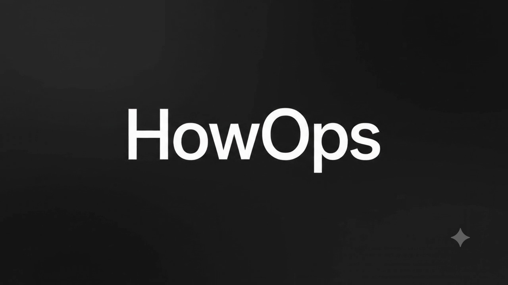
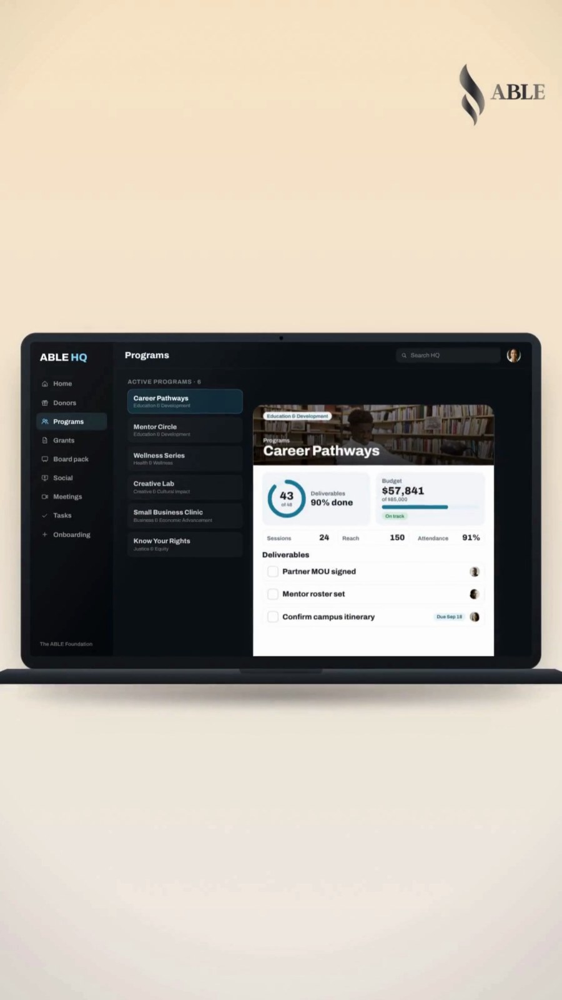

OPERATIONS. SYSTEMS. POSSIBILITIES.

Your vision. Built to work.
Custom systems and hands-on operations for founders
and the teams behind them.
01 / FIND THE CONNECTIONS
Give the work
a shape.
Find the handoffs, decisions, and details
that need a home.
02 / CONNECT THE WORK
Everything knows
what’s next.
Clear owners. Connected actions.
A way forward.
03 / STEP INSIDE
Now it’s a
working reality.
Meet HQ. A HowOps product.
Built for ABLE and WISE.

Built by HowOpsWatch the launchHOWOPS HQ YOUR ORGANIZATION
One system.
Built around your world.
Your work deserves a place
where it all comes together.
HQ is a HowOps product shaped around the organization using it. Andra built distinct versions for The ABLE Foundation and WISE Financial Partners.
ABLE HQ
Donors, programs, grants, meetings, and board reporting. One operating home for a nonprofit’s work.
WISE HQ
A dedicated HQ build for WISE Financial Partners, shaped around a different organization.
THE LAUNCH FILM / 1:38
“I've doubled my client capacity
without adding hours to my week.”
WAYS TO WORK TOGETHER
Start where the
work gets stuck.
One clear next step. Then the work to make it happen.
01Operations AuditFind what needs to change.
A close look at how leads, clients, tasks, and handoffs move today. We identify the bottlenecks and decide what should change first.
YOU LEAVE WITHA complete operational assessment and prioritized recommendations.
02Systems ImplementationBuild the way forward.
SOPs, automations, and workflows built with you. Andra stays involved as the systems start running and your team learns to maintain them.
YOU LEAVE WITHWorking processes your team can keep using.
03Leadership CoachingMake room to lead.
Build the delegation habits and decision frameworks that help you lead the business without carrying every detail yourself.
YOU LEAVE WITHA clearer way to decide, delegate, and follow through.
THE PERSON BUILDING WITH YOU
Andra
Howard, MA
Strategy, with the sleeves rolled up.
Andra brings more than a decade of operations experience across defense contracting, federal law enforcement, and nonprofit leadership. He founded HowOps to help founders and small teams turn complex work into systems they can run.
He also founded The ABLE Foundation—where HQ became a working expression of that approach.
Communication
Read the transcript
You built the business. Now let's build the machine behind it. HowOps finds the friction, clears the bottlenecks, and puts practical systems in place, so the work runs smoother and you have room to lead. From an operations audit to better workflows and coaching, we help build a business that works beyond the founder. Book an intro call.
YOUR NEXT MOVE
What are you
building?
Let’s find the system that gets it moving.
Book a free 30-minute call